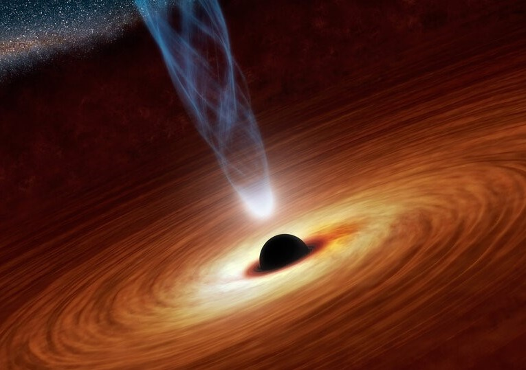
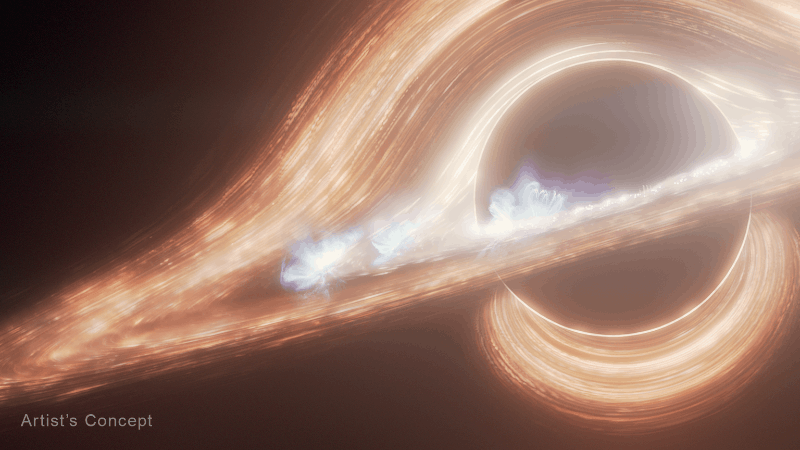
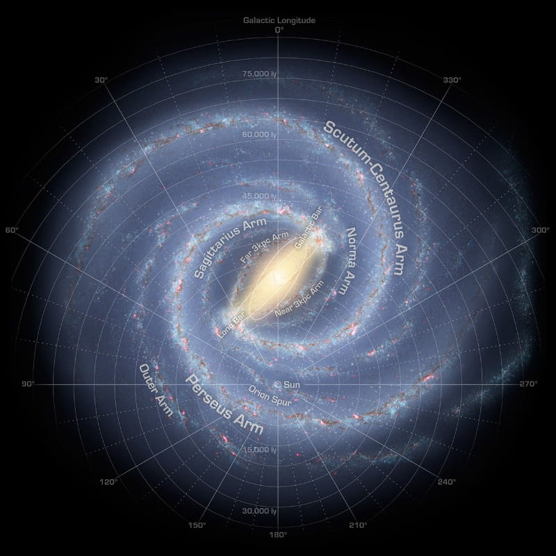
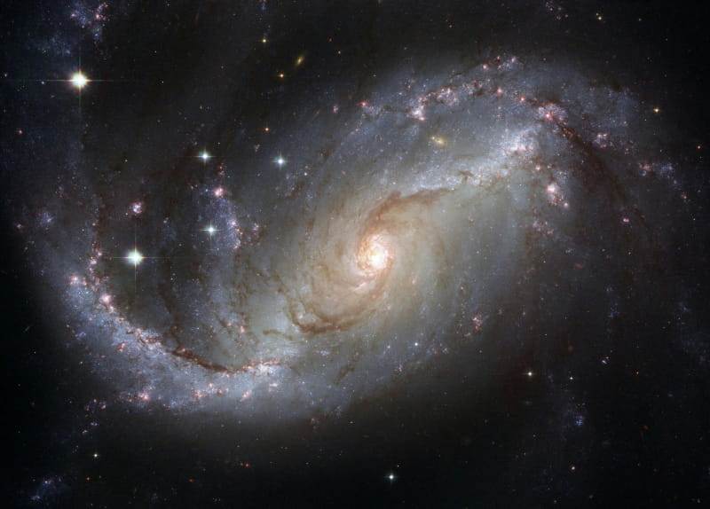
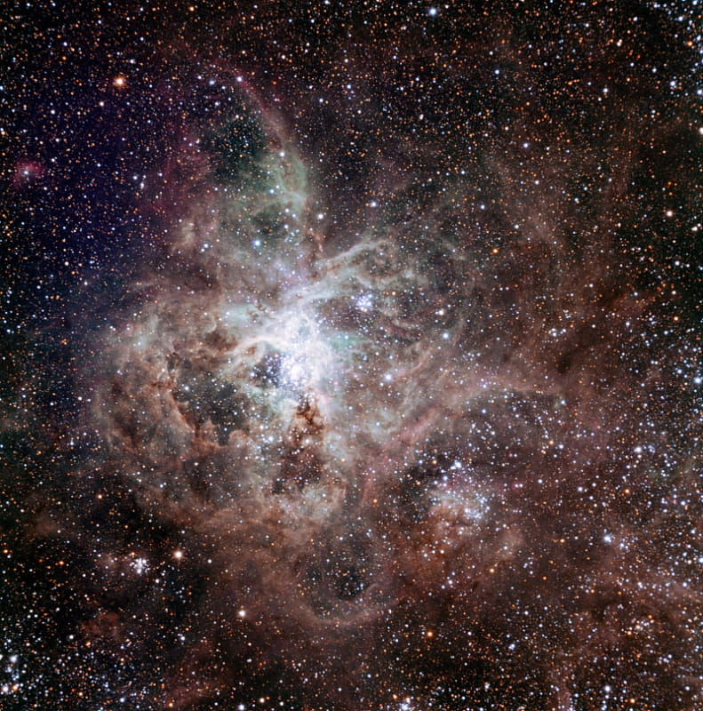
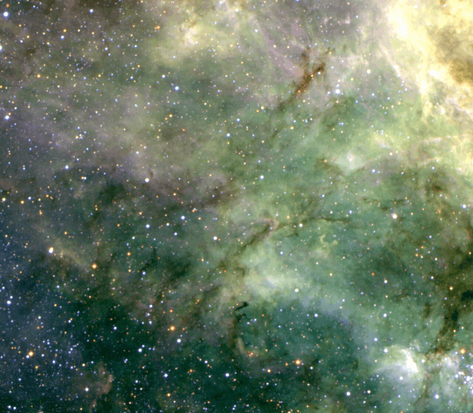

het heelal is een prachtig iets en is het grootste, prachtigste en ingewikelste werk dat er is en ooit zal bestaan. hieronder zie je enkele foto's van ons prachtig heelal.
Een zwart gat is een gebied in de ruimte met extreem sterke zwaartekracht. Zelfs licht kan er niet aan ontsnappen.


Dit zijn foto's van de Melkweg, het sterrenstelsel waarin ons zonnestelsel zich bevindt en dat uit honderden miljarden sterren bestaat.


Een nevel is een enorme wolk van gas en stof in de ruimte waar soms nieuwe sterren worden geboren.

